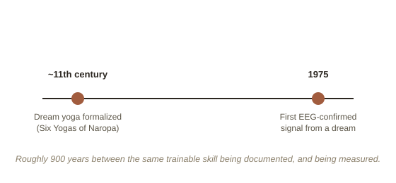

Chapter 7: Dream Yoga — A Thousand Years Before the EEG
Long before Keith Hearne's eye-signal experiment gave lucid dreaming a scientific paper trail, Tibetan Buddhist practitioners were already treating conscious dreaming as a trainable skill — not as a curiosity, but as one of the core practices in an entire contemplative system. Dream yoga (Tibetan: milam) is documented as part of the "Six Yogas of Naropa," a set of advanced meditation practices formalized around the 11th century, and its actual techniques are, in places, strikingly close to what a modern sleep lab would recognize.
The techniques converge, even though the goals don't
Traditional dream yoga instruction includes daytime practices that function almost identically to reality testing: practitioners are taught to repeatedly examine ordinary waking experience and ask whether it might be a dream, cultivating the same standing habit of doubt Chapter 2 covers for entirely secular reasons. Nighttime instructions include techniques for maintaining a thread of awareness while falling asleep — different in specific method, but functionally aimed at the same transition WILD targets in Chapter 3, staying conscious across the boundary rather than losing it.

What the goal was actually for
Where dream yoga genuinely diverges from the modern, secular version of this practice is its purpose. The techniques weren't developed to produce an entertaining or therapeutic experience inside the dream itself — becoming lucid was treated as a training ground for a much larger claim: that ordinary waking life is, in a specific philosophical sense, no more solid or "real" than a dream is. Recognizing a dream as a dream, while inside it, was meant to build the same recognition toward waking experience — that it too is a constructed, impermanent appearance, not a fixed, independently existing reality. Flying, changing the dream's content, or confronting a dream figure without fear were treated less as goals in themselves and more as proof of concept: if you can act without fear or attachment inside a dream once you know it's constructed, the tradition's claim is that the same freedom is available toward waking life once its own constructed nature is recognized just as clearly.
An honest note on what transfers and what doesn't
It's worth being precise here, in the same spirit as the rest of this library: the techniques transfer remarkably well and are testable — reality testing and sustained pre-sleep awareness genuinely work, regardless of framework, which is exactly why secular researchers rediscovered functionally similar methods independently. The larger metaphysical claim — that waking reality and dreaming are equivalent in the specific way the tradition asserts — is a philosophical and contemplative position, not a scientific one, and isn't something a sleep lab is equipped to confirm or rule out. Both things can be true at once: the practice is old, effective, and independently verified by modern methods; the philosophy behind why it was originally developed is a separate, much larger claim that sits outside what any EEG can settle.
Try this
Ideas for noticing or testing this in your own life.
- Try the philosophical version of a reality check, not just the practical one: next time you do a daytime reality check, sit for a moment afterward with the actual question dream yoga asks — not just "am I dreaming," but "how would I know either way, and what does that say about how solid this moment actually is?"
- Notice fear inside a lucid dream, if you get one: dream yoga specifically trains acting without fear once something is recognized as a dream — notice whether knowing you're dreaming actually changes your emotional reaction to something frightening inside it, or not.
Worth pulling on?
A few loose threads from this chapter — if any of these genuinely grab you, that's a good sign of where to go next.
- Dream yoga is traditionally taught alongside a related practice for consciously navigating the dying process, treating the dissolution of ordinary waking consciousness at death as structurally similar to falling asleep — a genuinely different framework from anything else in this library.
- The core claim underneath dream yoga — that recognizing a constructed appearance as constructed changes your relationship to it — overlaps directly with a completely secular practice already covered elsewhere. → Already in the library: Meditation & Contemplative Practice covers the broader tradition this technique comes from, and what's actually been measured about it.